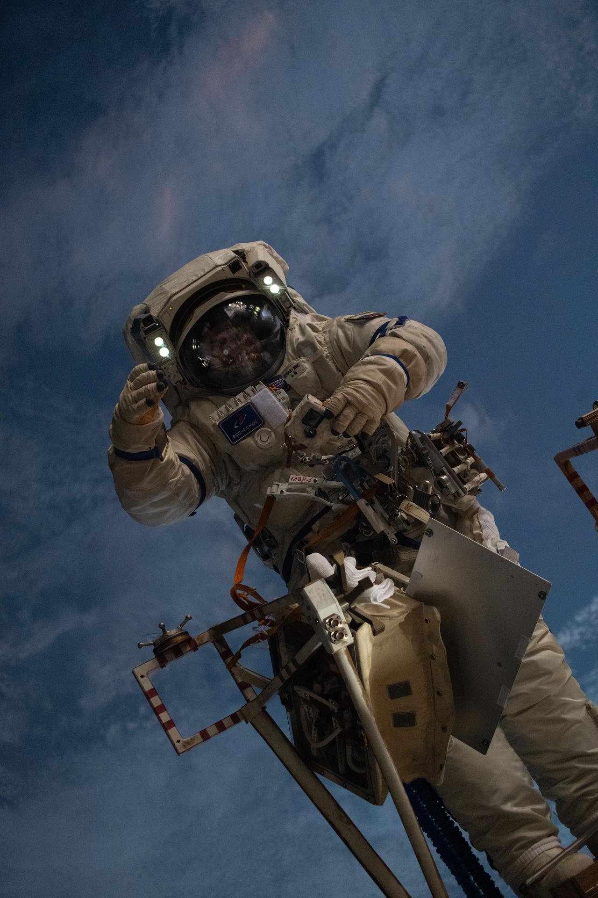

Astronauts
👷 Humanity’s Emissaries to the Stars

An astronaut conducts an Extra-Vehicular Activity (EVA) in low Earth orbit
Astronauts — or cosmonauts, as Russian spacefarers are called — are among the most rigorously trained individuals in human history. Selected from thousands of applicants for their physical fitness, psychological resilience, and technical expertise, they undergo years of preparation before ever leaving Earth. Since Yuri Gagarin’s historic flight in 1961, more than 600 people from over 40 countries have made the journey to space.
Life in space presents unique challenges: microgravity causes bone density loss and muscle atrophy, while cosmic radiation increases cancer risk. Astronauts aboard the International Space Station (ISS) exercise for two hours every day to counteract these effects. Despite the hardships, most who have experienced the overview effect — seeing Earth as a fragile blue marble against the black void — describe it as a profoundly life-changing experience.
How to Become an Astronaut
NASA selects new astronaut classes approximately every four years. The requirements are extremely demanding, covering academic, physical, and psychological criteria:
- Education
- A master’s degree (or equivalent) in a STEM field: engineering, biological science, physical science, computer science, or mathematics. Medical doctors and military test pilots with the required experience also qualify.
- Professional Experience
- At least two years of relevant professional experience after completing the qualifying degree, or at least 1,000 hours of pilot-in-command time in jet aircraft.
- Physical Fitness
- Candidates must pass a long-duration spaceflight physical examination. Requirements include specific ranges for height (between 157 cm and 190 cm for NASA), blood pressure, and vision (correctable to 20/20).
- Psychological Assessment
- Extensive psychological testing assesses teamwork, stress management, conflict resolution, and the ability to work in isolated, confined environments for extended periods — often alongside an international crew speaking different languages.
- Training Programme
- Candidates who pass selection enter a two-year basic training programme covering spacewalking (EVA), robotic arm operations (Canadarm2), Russian language, aircraft flying, water survival, and training in Russia’s Star City facility.
Pioneering Astronauts
Yuri Gagarin (1934–1968)
🇷🇺 Soviet Union — Cosmonaut
The first human to travel into outer space, Gagarin completed one orbit of Earth aboard Vostok 1 on 12 April 1961. The 108-minute flight made him an instant global hero. Tragically, he died in a training jet crash in 1968, aged 34.
Neil Armstrong (1930–2012)
🇺🇸 United States — NASA Astronaut
Commander of Apollo 11, Neil Armstrong became the first human to walk on the Moon on 20 July 1969. His words — “That’s one small step for [a] man, one giant leap for mankind” — are among the most famous ever spoken.
Valentina Tereshkova (born 1937)
🇷🇺 Soviet Union — Cosmonaut
The first woman in space, Tereshkova flew aboard Vostok 6 in June 1963, completing 48 orbits of Earth over three days. She remains the only woman to have flown a solo space mission.
Sally Ride (1951–2012)
🇺🇸 United States — NASA Astronaut
The first American woman in space, Sally Ride flew aboard Space Shuttle Challenger in June 1983. She later became a prominent science educator and advocate for STEM education for young women.
Chris Hadfield (born 1959)
🇨🇦 Canada — CSA Astronaut
The first Canadian to walk in space, Hadfield commanded the ISS during Expedition 35 in 2013. He became famous worldwide for sharing stunning photographs of Earth from orbit and recording a music video in space.
Longest Cumulative Spacewalk Records
| Astronaut | Country | EVAs Performed | Total EVA Time | Agency |
|---|---|---|---|---|
| Anatoly Solovyev | Russia | 16 | 82h 22m | RSA |
| Peggy Whitson | USA | 10 | 60h 21m | NASA |
| Fyodor Yurchikhin | Russia | 9 | 59h 29m | RSA |
| Michael Lopez-Alegria | USA | 10 | 67h 40m | NASA |
| Sunita Williams | USA | 7 | 50h 40m | NASA |
Record-Breaking Space Feats
- Longest continuous spaceflight: Valeri Polyakov spent 437 days and 18 hours aboard the Mir space station (1994–1995).
- Most spaceflights: Franklin Chang-Diaz and Jerry Ross each flew seven Space Shuttle missions.
- Oldest person in space: William Shatner (the actor, aboard Blue Origin’s New Shepard in 2021) at age 90, in a suborbital flight. For an orbital mission, John Glenn flew on the Space Shuttle at age 77 in 1998.
- Farthest from Earth (crewed): The Apollo 13 crew passed 400,171 km from Earth on the far side of the Moon during their 1970 emergency.
How to Become a NASA Astronaut
NASA regularly recruits new astronaut candidates. The selection process is rigorous and competitive, with thousands of applicants vying for a handful of spots.
- Earn a degree — A bachelor’s degree in engineering, biological science, physical science, computer science, or mathematics is required from an accredited institution.
- Gain experience — At least two years of relevant professional experience is required, or at least 1,000 hours of pilot-in-command time on a jet aircraft.
- Pass medical evaluations — Candidates must meet specific physical requirements including vision, blood pressure, and height standards.
- Complete training — Selected candidates undergo two years of basic training covering spacewalking, robotics, Russian language, and aircraft flight.
- Mission assignment — After graduation from the astronaut candidate program, astronauts wait for their first mission assignment, which can take several years.
Learn about current ISS crew and ongoing missions at NASA International Space Station.